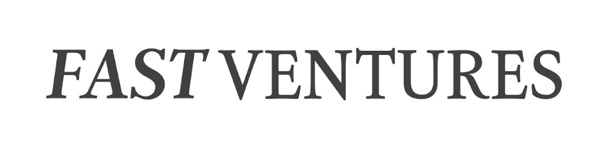
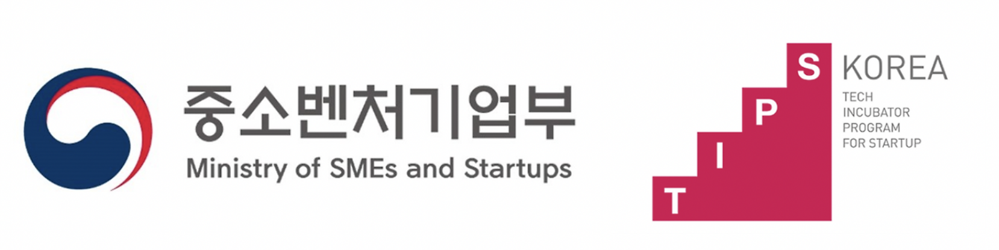

우리의 미션
Proby는 고객의 가장 실제에 가까운 맥락을 잃지 않으면서도, 프로덕트 팀이 언제 어디서든 리서치를 실행하고 ROI를 증명할 수 있도록 돕습니다.
가장 실제의 고객 맥락
설문 숫자뿐 아니라 원문 답변, 상황, 감정까지 함께 수집해 고객의 ‘이야기’를 놓치지 않습니다. 풍부한 맥락이 있는 인사이트를 기반으로 더 정교한 제품 결정을 내릴 수 있습니다.
AI 인터뷰로 시간·공간 제약 없음
AI 인터뷰가 24시간 자동으로 질문하고 응답을 수집합니다. 리서처와 PM이 모두 바쁜 팀에서도, 고객과의 대화를 놓치지 않고 반복적으로 실행할 수 있습니다.
전세계 언어 제약 제거
여러 언어로 수집된 응답을 하나의 워크플로 안에서 분석합니다. 글로벌 유저 리서치를 위해 별도의 현지 인력과 번역 리소스를 크게 줄일 수 있습니다.
혁신적인 리서치 ROI
기존 리서치 대비 시간과 비용을 줄이면서도, 더 많은 실험과 인사이트를 만들어냅니다. 조직이 리서치 투자 대비 임팩트를 명확하게 설명할 수 있도록 돕습니다.
팀 소개
다양한 배경과 전문성을 가진 팀원들이 함께 더 나은 사용자 경험을 만들어갑니다.

김유빈
CEO
회사의 전략과 비전을 수립하며, AI 기반 사용자 리서치 플랫폼의 성장을 이끌어갑니다.

이철희
CBO
비즈니스 전략 수립과 파트너십 개발을 통해 회사의 사업 확장을 주도합니다.

진현우
CTO
기술 전략과 제품 개발을 총괄하며, AI 기반 리서치 플랫폼의 기술적 우수성을 확보합니다.
주요 투자자들로부터 이미 인정을 받았습니다.
시장의 가능성과 제품 방향성을 검증받기 위해, 검증된 투자자들과 함께 성장하고 있습니다.

패스트벤처스 — 2022년 8월, 아이디어 및 시장 검증을 위한 시드 투자 1.2억 원을 유치했습니다.

중소벤처기업부 TIPS — 2024년 8월, 제품 고도화를 위한 TIPS 지원금 5억 원을 확보해 제품과 기술에 집중하고 있습니다.
함께 일하고 싶으신가요?
프로젝트 문의나 협업 제안을 환영합니다. 언제든지 연락주세요.